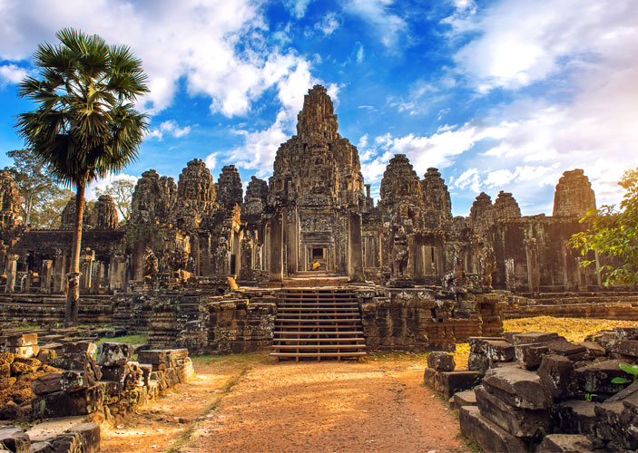
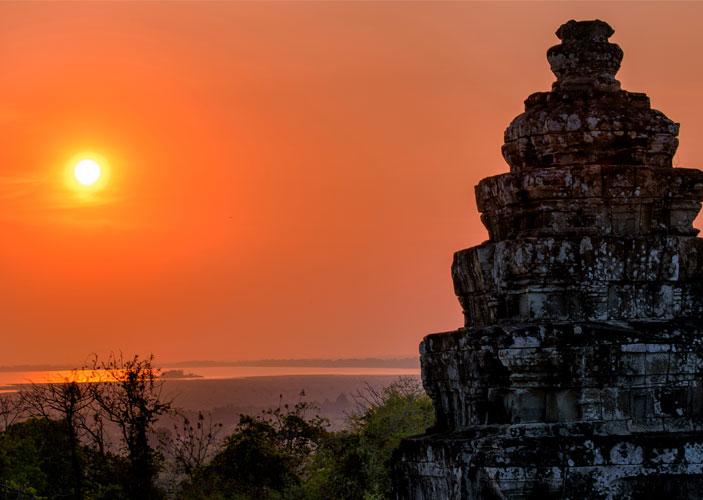
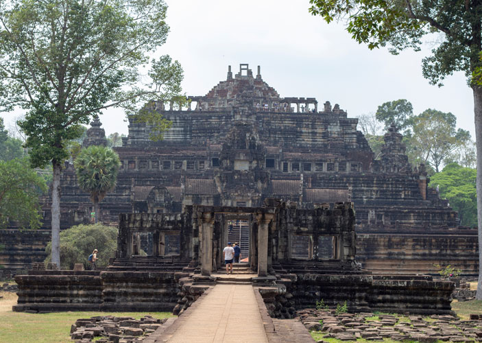

Angkor Wat
05:00 - 17:30
Siem Reap
Angkor Wat is a temple complex in Cambodia and the largest religious monument in the world, on a site measuring 162.6 hectares.


Bakheng Temple
05:00 - 19:00
Siem Reap, Cambodia
Phnom Bakheng at Angkor, Cambodia, is a Hindu and Buddhist temple in the form of a temple mountain. Dedicated to Shiva, it was built at the end of the 9th century, during the reign of King Yasovarman. Phnom Bakheng at Angkor, Cambodia, is a Hindu and Buddhist temple in the form of a temple mountain. Dedicated to Shiva, it was built at the end of the 9th century, during the reign of King Yasovarman.

